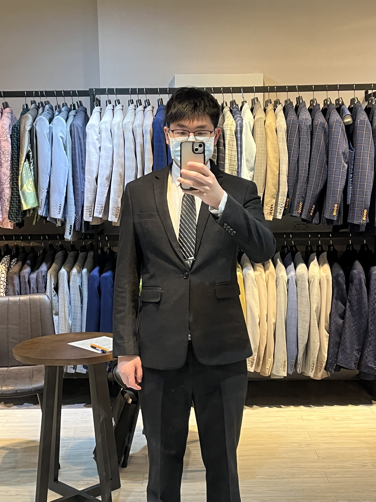
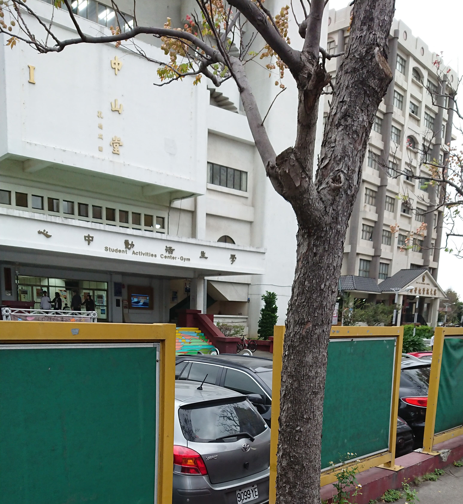
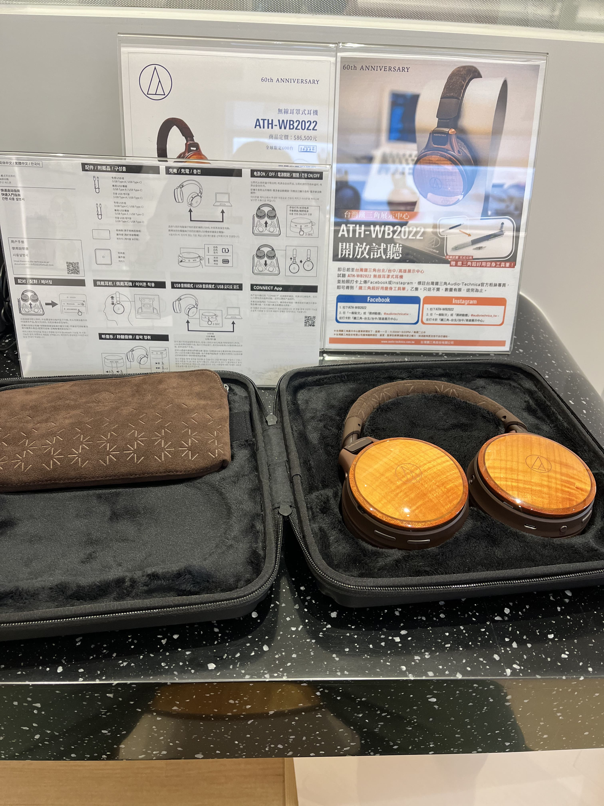
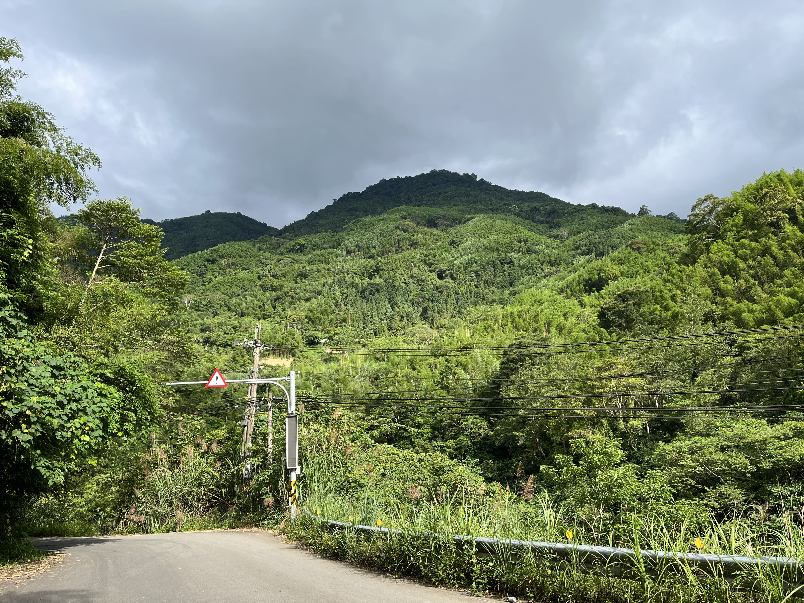
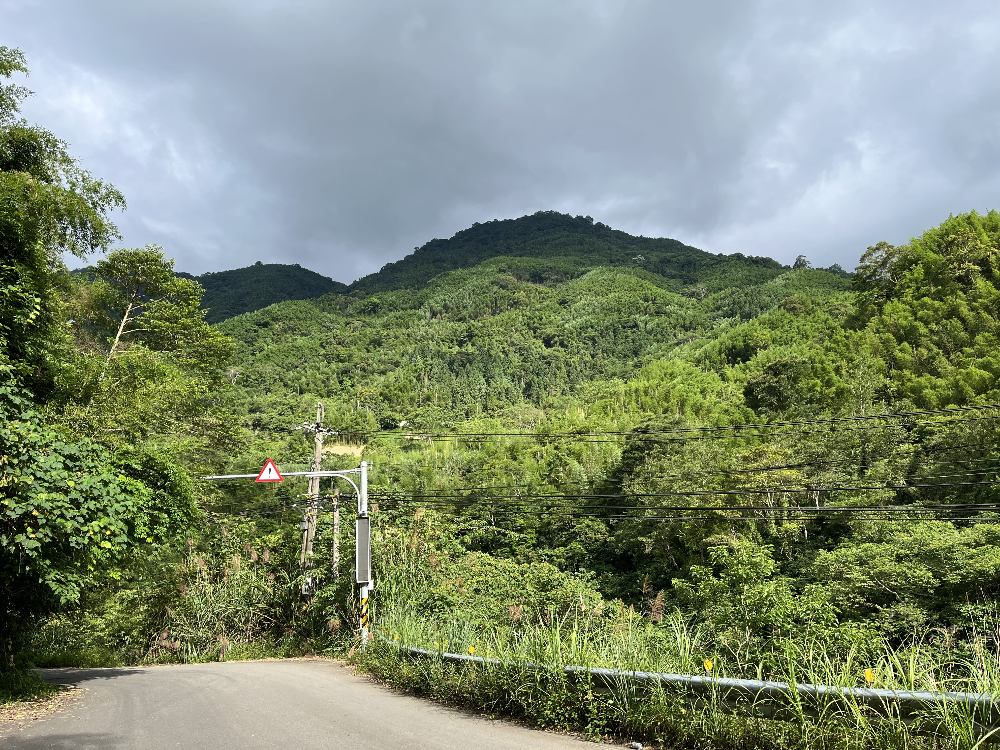
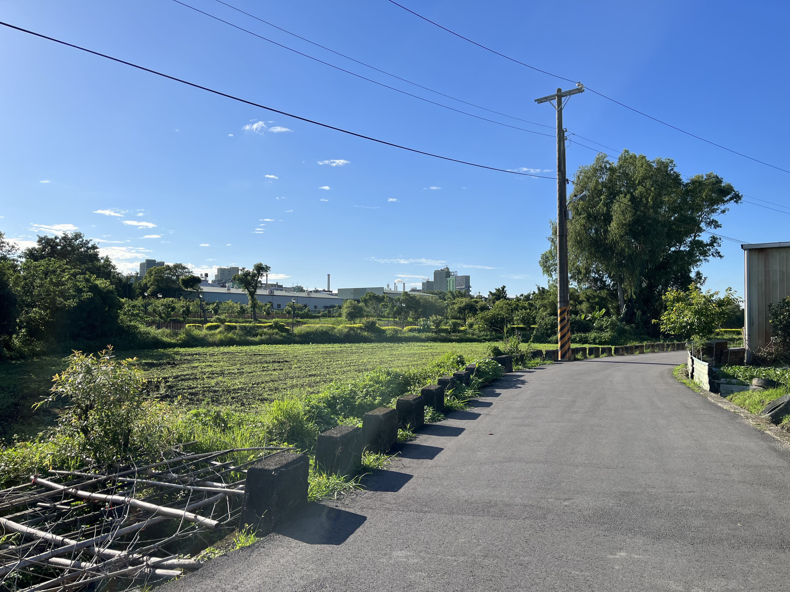
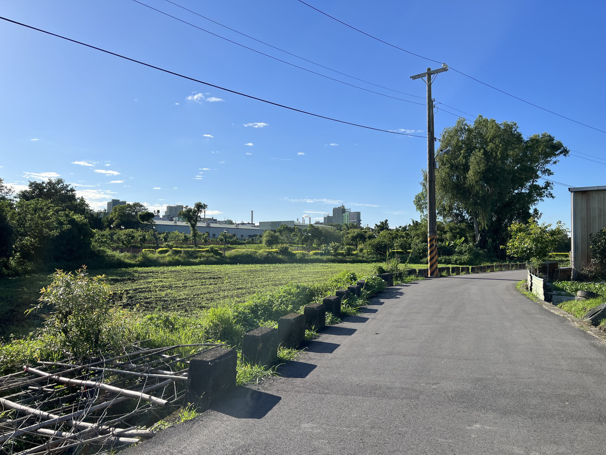

-我思故我在
這是我
陳廷瑋
格言
私たち一人一人が航海しているこの人生の広漠
とした大洋の中で理性は羅針盤、情熱は疾風。
我們每個人在如大海一般廣闊的人生中航行著
理性是指南針，熱情是疾風
關於我
喜歡 聽音樂，騎車拍照，看書，及會在除夕夜不看紅白歌唱大賽不停轉頻道的人
討厭 下雨天，洗碗，及騎著爆改直噴勁戰，頭戴鍍膜R帽，拆後照鏡，自稱北宜一條狼的人
小介紹
小弟大學畢業於 萬能科大數位多媒體系
如果您問我那邊是否很多加炯?我一定毫不猶豫的回答，他們只是愛玩
而且校風十分自由，您可以在校園內、廁所、教室、走廊及教官室前
享受吞雲吐霧的爽快感。
校園美景為教官室前，嘴巴被菸燙破的蕭敬騰看板
及因為有趣而被踢破的廁所門。
Skill!
Java
85%
Unity
65%
Python
75%
UE4
65%
Html
65%
Japanese
90%
經歷
大一時期:3D建模製作，製作出可動人形
大二時期:Unity遊戲專案製作，塔防及類馬力歐
大三時期:Ue4遊戲專案製作，FPS及ARPG
大四時期:RPG專題製作
Photo
我喜歡聽音樂，也喜歡利用耳機及耳擴，讓我能聽見更多不同的聲音
同時也購買了數百張的Disc，讓我能聽見最純真的音質，開心 :)
目前主要以ath-a2000z及AT-HA26D為主
替代役美好時光，我曾在公所停留約一年的時間
因為當時疫情的影響，我時常前往疫苗站幫忙
感謝那段時間公所同仁的照顧，一起度過選舉及疫情
還要感謝成功嶺的諾羅病毒以及在廁所偷抽菸的同袍
我不會忘記整個中隊，被罰在烈日下趴在地上的那甜美的汗水
謝謝新冠病毒給我的傷害，還好我退了
 

 

我喜歡四處騎車拍照，好看的風景都拍起來當作美好的回憶
但除了路邊的學生妹，及萬華華西街附近抽著菸站壁ㄟ大姐除外，
雖然那也算是另類的風景就是了